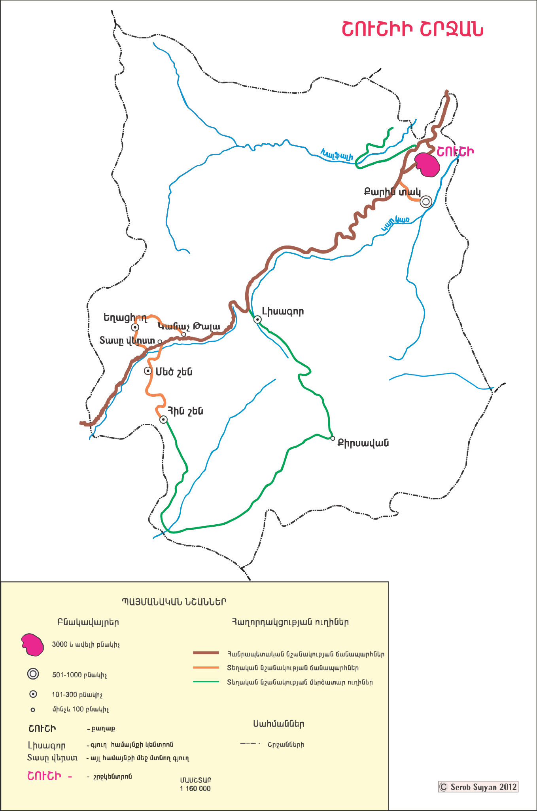

Շուշիի Քարտեզ
Սեղմեք համայնքի վրա՝ մանրամասն տեղեկություն ստանալու համար

 (1).png)
Խաղաղության և ավանդույթների աշխարհ
2024-2025
Իմացիր ավելինՍեղմեք համայնքի վրա՝ մանրամասն տեղեկություն ստանալու համար